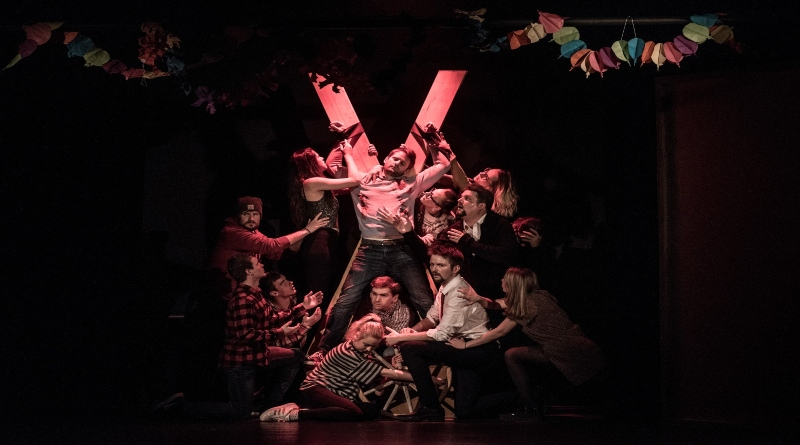

Už se nevrátil
Příběh je o chlapci, který neměl moc fajn život a tak se rozhodl, že se vydá jak se říká do světa.
Ale ne každý má tu kliku že najde nějakého fajn mlynáře, který ho nechá v mlýně přespat.
On ho sice našel, ale ne toho
hodného.
Hrají:
Jana Kurzyszová, Radana Wagnerová, Michal B.Jordn, Michal Páč a Barbora Černá
Není určeno pro děti a mládež! Obsahuje nahotu a násilí.
